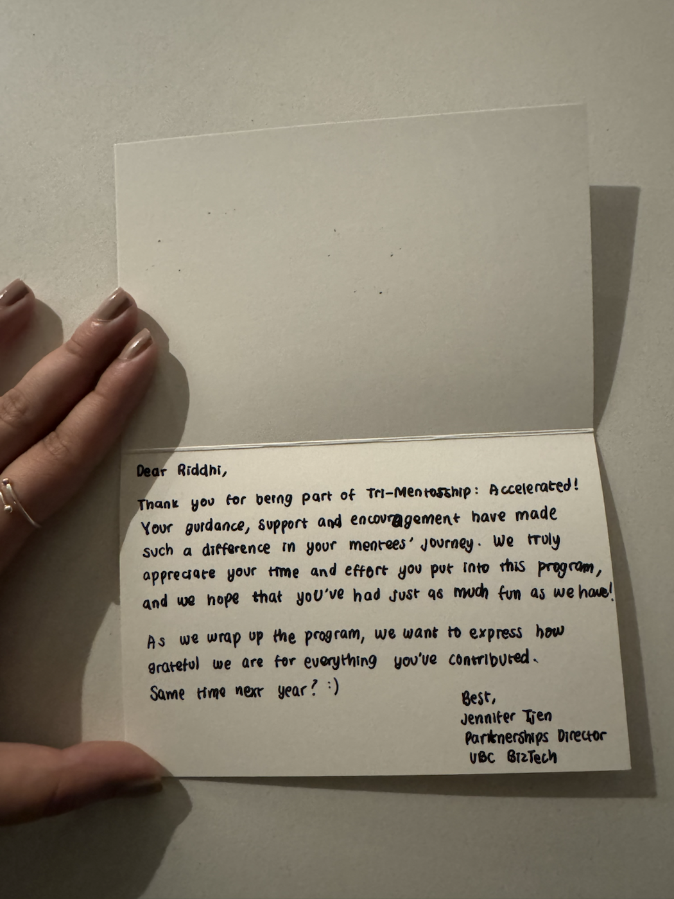

Riddhi Battu
Data scientist and researcher building climate-smart, farmer-first systems. I love learning about new AI tools and diving deep into datasets to turn complex signals into usable insight.
Leading data initiatives at LiteFarm while supporting conservation research and privacy-layered analytics.
About
I specialize in translating complex environmental datasets into decision-ready tools. My work spans climate and biodiversity metrics, geospatial analysis, and automated API pipelines across GBIF, GIFT, SoilGrids, and ERA5-Land. I enjoy experimenting with new AI tools and diving deep into datasets to build reproducible, scalable systems that serve farmers, conservation teams, and policy makers.
Studio
Current Focus
Leading data initiatives at LiteFarm and supporting conservation research.
Building privacy-layered dashboards, automated environmental datasets, and reproducible pipelines that make climate metrics usable for farmers, researchers, and policymakers.
Impact Highlights
LiteFarm data leadership
Led data science initiatives supporting sustainable agriculture, biodiversity scoring, and climate modeling.
Privacy-first dashboards
Implemented privacy-layered dashboards with role-based access for large-scale deployments.
Automated environmental pipelines
Designed automated API pipelines and deployed Shiny-for-Python apps via Nginx + Uvicorn.
Professional Experience
LiteFarm
Faculty of Land and Food Systems, UBCLeading data science initiatives across sustainable agriculture, climate modeling, biodiversity metrics, and geospatial analytics. Mentoring student researchers and standardizing data for interoperability with GHG calculators.
Built automated API pipelines, performed species richness modeling, and improved SQL performance for reporting dashboards.
Developed Shiny dashboards for farmers and researchers, and supported privacy-layered analytics deployments.
Research Assistant
Josephine Gantois Research Group, IRES, UBCSupporting interdisciplinary research in ecology, climate adaptation, and conservation finance using automated datasets and reproducible analytical pipelines.
Data Scientist
Hora Education & Services Pvt., Gurgaon, IndiaDesigned loan collection models, analyzed MongoDB data, and maintained PowerBI dashboards for strategic decision-making.
Student Body President
Scottish High International School, Gurgaon, IndiaLed school-wide initiatives and delivered SHISMUN 2019 with 700+ delegates and a 30% increase in event funding.
Projects & Research
FAO Agroecology Report
Published in the FAO Agroecology Knowledge Hub, highlighting participatory, community-driven indicators and data sovereignty through LiteFarm-backed research.
Climate-Friendly Nitrogen Application
Served as a supervisor/advisor for the research brief on nitrogen use efficiency and farm profitability.
Loss Framing & Single-Use Cups
UBC SEEDS single-use cup study (N=253) with loss framing analysis and recommendations for behavior-change messaging.
pynyairbnb (PyPI)
Co-developed a Python package for Airbnb listing analysis, including preprocessing, visualization, and machine learning workflows.
DiversiPlant Dashboard
Building an interactive dashboard to support multifunctional intercropping through ecophysiology and trait-based modeling.
Core Skills
Programming
Visualization
Geospatial Tools
Machine Learning
DevOps & Automation
Data Integration
Education & Awards
University of British Columbia
Sep 2020 - Apr 2024 | Faculty of Arts International Student Scholarship 2023-24
Awards & Certifications
TCPS 2 Core Certificate (2022)
Young Leaders Creating a Better World for ALL (Women Economic Forum, 2019) WEF profile School post
Volunteer Work
Earth Saviors Foundation volunteer (2015-2022)
Waste segregation and environmental campaigns (2016-2019)
Mentorship & Community




DataFest Hackathon Judge
Judged student data science projects and provided feedback on analytical storytelling.
UBC BizTech Mentor
Mentored data-focused teams through BizTech's Tri-Mentorship accelerated program.